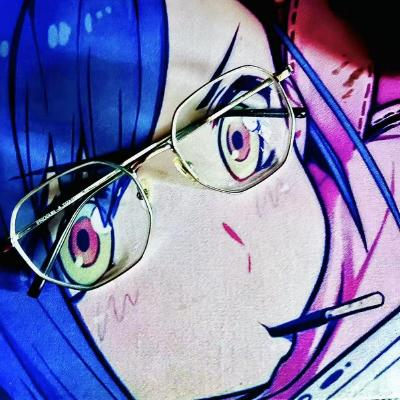
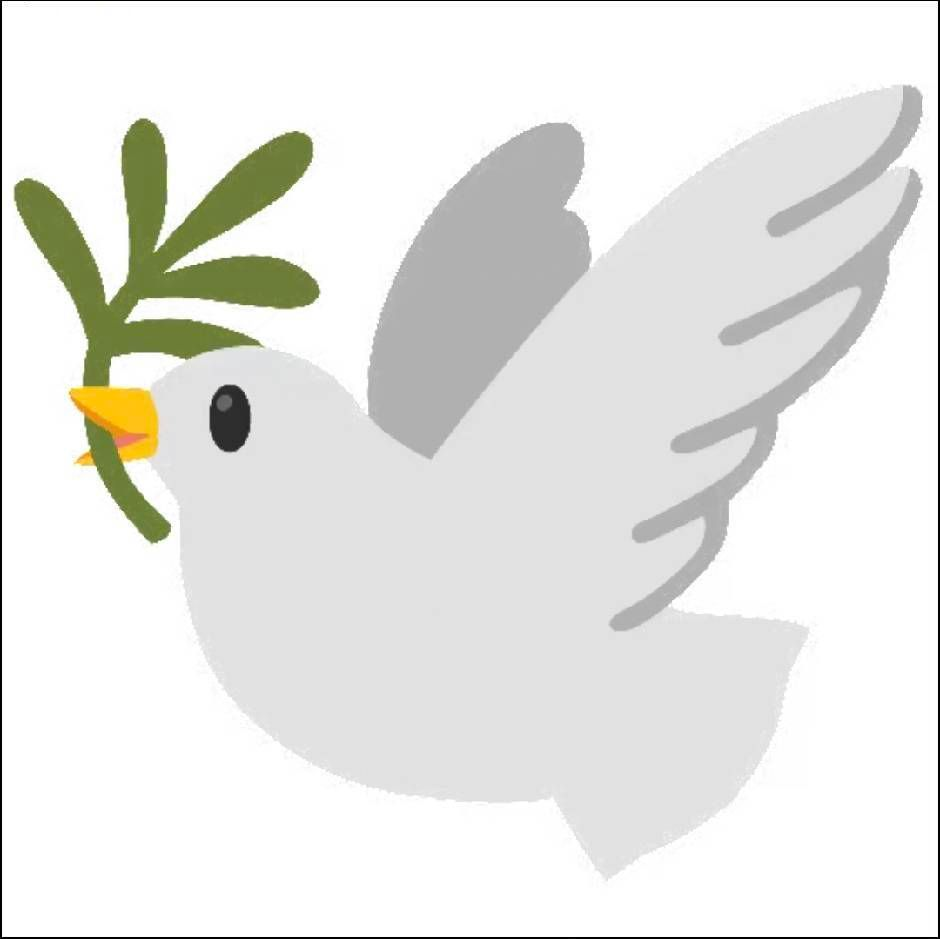

Pwn
二进制漏洞挖掘、内存破坏与系统利用。
WHO WE ARE
六星战队（******）由复旦大学计算机科学技术学院学生组成，长期活跃于国内外高水平 CTF 赛事，并作为 XCTF 联赛社区战队主办 *CTF 国际赛。
我们相信真正的安全能力来自持续学习、动手实践与开放协作。这里没有固定答案，只有值得被重新审视的系统与边界。
DISCIPLINES
从底层系统到链上世界，我们用可验证的技术探索安全问题。
二进制漏洞挖掘、内存破坏与系统利用。
应用安全、身份边界与复杂业务逻辑。
程序分析、代码还原与对抗性逆向。
密码系统、数学结构与实现缺陷。
取证、隐写、编码与跨领域问题求解。
智能合约、共识系统与链上安全。
SELECTED RECORD
LATEST GLOBAL TITLE
六星与浙江大学 AAA、上海交通大学 0ops 组成联合战队，以 8225 分排名第一，夺得国际赛事总冠军。
复旦大学官方报道A*0*E 曾连续四届进入 DEF CON CTF 决赛（2017–2020）；*0xA 是六星参与的新一代高校联合战队。每项成绩均附公开来源。

RECENT FIELD NOTE · 京麒 CTF
ALUMNI NETWORK
六星的优秀学长与历届成员，活跃在公共安全、学术研究、安全团队与科技企业一线。
加入六星，收获的不只是技术训练与比赛经验，还有一群能够长期相互启发、彼此信任的同行者。
THE TEAM
来自不同技术方向，因为同一种好奇心聚在一起。这些是六星现在与曾经并肩作战的成员。

个人主页 GyroJ关于我，只是一个生在没有杨培杰时代的凡人...
个人主页 BenSmith目前在做固件漏洞自动化挖掘，想做 reverse 实战的可以联系我。
个人主页 Juryorca这位是深耕 pwn 领域的专家 Juryorca 大神，超级大神 py，又称瑞幸首席幸运官 lucky！
个人主页 LunaticQuasimodoLunaticQuasimodo，一位高调的白客，个人主页十分精美，征婚中，有意向的自己联系。

个人主页 Y2Sixstars 的老队长，无数 fduer CTF 的引路人，真正的大神。同时是知名偶像乐团的鼓手 sama。
个人主页 Hencecho计算机领域大神，算法大神，从二年级就开始学算法的顶级 ACM 选手。
个人主页 miao记录一些技术随笔与想法。
JOIN SIXSTARS
无论你刚刚入门，还是已经身经百战，只要愿意投入时间、保持诚实并持续钻研，六星都欢迎你。